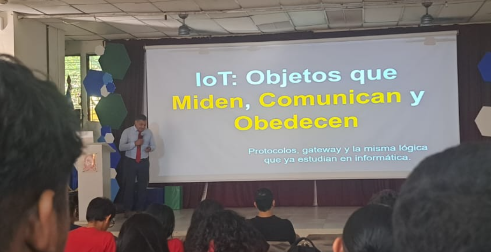

Ponencia 3: Eficiencia energética, optimización de recursos y sostenibilidad aplicada a soluciones tecnológicas
Ponencias17/11/2026CGcq22003 y gb23003

Lugar: Auditorio 1, 8:00 a. m - 10: 00 a.m.
Tema: Eficiencia energética, optimización de recursos y sostenibilidad aplicada a soluciones tecnológicas (Automatización de aires acondicionados mediante IoT, BACnet e IA).
Expositor: Lic. Nahum Sánchez.
Ideas centrales: El alcance real del IoT industrial más allá de las placas básicas, la arquitectura de comunicación mediante protocolos abiertos como BACnet y la evolución desde la simple medición hasta la predicción con Inteligencia Artificial.
Aprendizajes:
IoT más allá de Arduino: Comprendimos que el Internet de las Cosas abarca equipos industriales reales como aires acondicionados, medidores, bombas y luminarias, operando bajo un ciclo claro de tres pasos: Mide (sensores), Comunica (gateways y protocolos) y Decide y actúa (software y actuadores).
Cómo hablan las máquinas (Modbus vs. BACnet): Aprendimos la diferencia clave entre protocolos industriales; mientras que Modbus entrega datos crudos en registros numéricos que requieren un manual para interpretarse, BACnet ofrece objetos con nombre, tipo y unidades autoexplicativas (como Temp. zona 2 = 24.5 °C), funcionando como un lenguaje intermedio estándar donde el gateway actúa como un intérprete en tiempo real (similar al JIT en .NET).
De medir a predecir (La escalera de inteligencia): Analizamos cómo escalar un sistema de control pasando por tres niveles: 1) Estadística simple (promedios y gráficos por zona), 2) Machine Learning (predicción y detección de anomalías) y 3) Modelos de lenguaje para ejecutar órdenes en lenguaje natural.
Control centralizado y ahorro real: Vimos en práctica cómo una aplicación desarrollada en .NET permite gestionar horarios de encendido, fijar límites de temperatura, monitorear zonas en tiempo real, recibir alertas de fallas y asegurar el apagado en fines de semana, logrando el mismo confort con muchas menos horas de operación